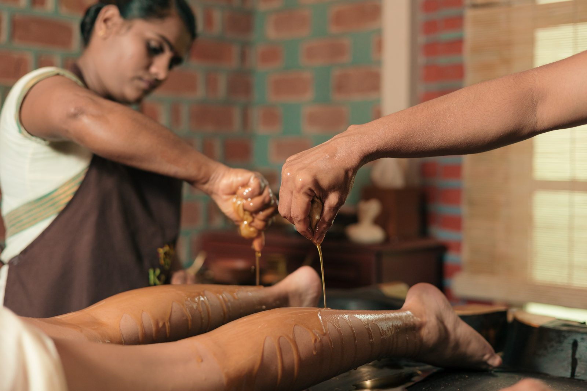
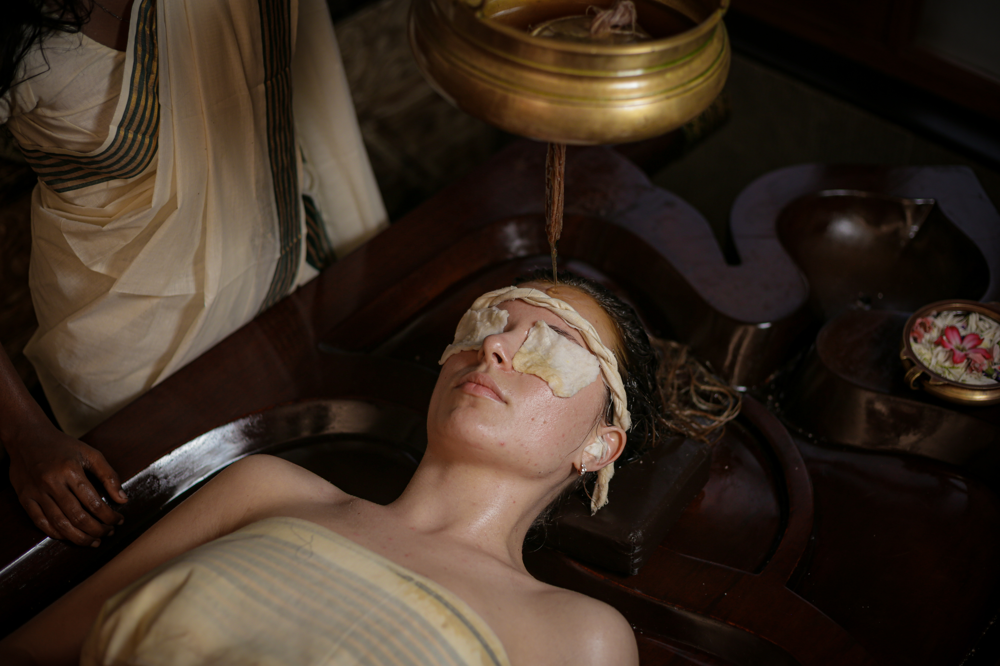

New to Ayurveda? Discover Holistic Healing at Kairali – The Ayurvedic Healing Village
If you’re new to Ayurveda, welcome to a 5,000-year-old tradition that promotes health, longevity, and well-being. Ayurveda, or “The Science of Life,” is a natural and holistic approach to wellness that emphasizes harmony in the body, mind, and spirit. Whether you’re looking for relief from chronic pain, increased energy, or simply a rejuvenating experience, Kairali – The Ayurvedic Healing Village is the ideal place to explore Ayurveda at your own speed.
Kairali, a prominent Health Retreat in Kerala, provides authentic Ayurvedic experiences tailored exclusively to the needs of older adults seeking natural solutions to maintain health, increase mobility, and improve quality of life.
Why Ayurveda is Perfect for Seniors
Aging is a natural process, but Ayurveda shows us how to age gracefully while being healthy. If you’re experiencing:
- Joint stiffness or mobility difficulties.
- Digestive problems or loss of appetite.
- Stress, anxiety, or disrupted sleep patterns.
- Low energy levels or weakened immunity
Then Ayurveda can help you achieve balance in a peaceful, non-invasive, and holistic way.

Your Ayurvedic Journey Begins at Kairali
At Kairali – The Ayurvedic Healing Village, we offer an immersive Ayurvedic experience in a serene and rejuvenating environment. Recognized as the Best Ayurvedic Resort in Kerala, our retreat is designed to help you understand your body’s unique needs and introduce you to the healing benefits of Ayurveda in a way that is simple, practical, and deeply restorative.
What You Can Expect at Kairali’s Ayurvedic Retreat in India
- Personalized Ayurvedic Consultation
- Your journey begins with a consultation with our Ayurvedic doctors who will evaluate your health, body type (Dosha), and lifestyle requirements.
- Gentle & Therapeutic Ayurvedic Practices
- Enjoy traditional Ayurvedic therapies that promote joint flexibility, purification, and relaxation. Herbal oils, warm compresses, and gentle massages are used in our therapies to help aging muscles and joints feel more comfortable and vibrant.
- Ayurvedic Nutrition & Diet
- A well-balanced, easy-to-digest Ayurvedic diet is supplied to fuel your body while also improving digestion. Each meal is meticulously made with fresh, seasonal ingredients that adhere to Ayurvedic principles.
- Calming Yoga & Meditation
- Learn basic, yoga postures and breathing methods to increase flexibility, reduce stress, and improve lung function.
- A Peaceful Stay in a Wellness Resort in India
- Relax in a natural, pollution-free environment surrounded by lush foliage and fresh air—the perfect place to relax, rejuvenate, and focus on your health.
Why Choose Kairali – The Best Ayurvedic Resort in Kerala?
- A Home Away from Home
- Our retreat is intended to provide a relaxing, quiet, and homey experience in a stress-free environment.
- 100% Natural & Holistic
- No chemicals or artificial interventions—just pure, traditional Ayurvedic techniques.
- Expert Guidance & Support
- Our experienced Ayurvedic doctors and therapists will guide you every step of the way.
- A Globally Recognized Ayurvedic Retreat in India
- Kairali attracts visitors from all over the world seeking authentic Ayurvedic experiences that improve health and well-being.
- Perfect for Seniors Seeking Relaxation & Vitality
- Our retreat is tailored to older folks who desire to revitalize, enhance their health naturally, and live a balanced lifestyle.

Common questions before a first visit
How long does a first programme usually run?
Most first-time patients stay between seven and fourteen nights. Panchakarma detoxification is generally advised for a minimum of fourteen. Your physician sets the length after the consultation.
Do I need a diagnosis before I arrive?
No. Bring any recent reports and a list of medicines you take. The consultation on arrival establishes your constitution and current condition.
Can I continue my existing medication?
Ayurvedic treatment at Kairali is given alongside, not instead of, care you already receive. Declare everything you take at the consultation so the physician can plan around it.
Begin Your Journey to Wellness Today!
Ayurveda is more than just healing; it is about leading a better, more fulfilling life. If you’re new to Ayurveda and seeking a relaxing, revitalizing experience, Kairali – The Ayurvedic Healing Village is the place to begin.
Your wellness journey starts here. Experience Ayurveda and life!